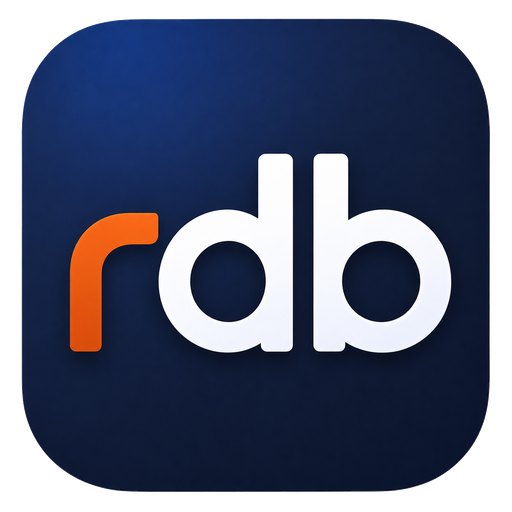

The all-in-one client for backend developers.
One cross-platform desktop client for SQL databases, document stores, message brokers, SSH terminals, file transfer, and HTTP — every backend tool you reach for, unified behind a single plugin-based window.
One window for your whole backend
rdb speaks SQL, documents, queues, shells, files, and HTTP from the same window — and stays small because the host ships no drivers.
Plugin architecture
Each backend is an out-of-process sidecar the host discovers at runtime. Connection forms and workspaces render generically from a plugin's declared config schema.
SQL browse & edit
Browse schemas, tables and DDL across PostgreSQL, MySQL, SQL Server and Snowflake. Run SQL, filter/sort, and stage multi-cell edits that commit atomically in one transaction.
Documents & queues
Query MongoDB collections, and browse a RabbitMQ broker's overview, queues, exchanges and connections — publish, get, and purge messages.
SSH terminal
Full PTY terminal to remote hosts with password or key auth, plus saved shell scripts per connection — right inside the same app.
Files: SFTP & S3
A unified file browser over SFTP servers and S3 buckets — upload, download, rename, delete and mkdir, with multipart uploads for large objects.
HTTP client
A built-in REST client with collections, environment variables, auth presets, and curl import/export — like having Postman in the same window.
Export & persistence
Stream full result sets to CSV, and keep saved connection profiles, SQL snippets and scripts per connection as human-readable JSON.
In-app plugin install
Install more plugins straight from a GitHub release — OS/arch matched, SHA-256 checksum-verified, no rebuild. The app and plugins auto-update.
10 built-in themes
Catppuccin Mocha & Latte, Dracula, Nord, Tokyo Night, Gruvbox, Monokai, Solarized, and GitHub Light — dark and light, your pick.
Ten backends, ready today
Install more in-app straight from a GitHub release — checksum-verified, no rebuild required.
PostgreSQL
PostgreSQL 12+ via sqlx. Schema browsing, SQL editor, inline cell editing.
MySQL
MySQL & MariaDB. Browse schemas and tables, run SQL, and edit rows inline.
SQL Server
Microsoft SQL Server via the Tiberius driver, with configurable encryption.
Snowflake
Snowflake warehouses with key-pair or password auth and warehouse/role selection.
MongoDB
MongoDB and Atlas clusters. Browse databases and collections and run find queries.
RabbitMQ
Brokers via the HTTP Management API. Management-UI-style browsing plus publish / get / purge.
SSH
PTY terminal to remote hosts with password or key auth, plus saved shell scripts.
SFTP
Browse and transfer files over SFTP — upload, download, rename, delete, mkdir.
Amazon S3
S3 and S3-compatible buckets with multipart uploads for large objects.
HTTP client
REST client with collections, environments, auth presets, and curl import/export.
The host is a generic pipe
The Tauri host knows nothing about SQL, documents, or queues. It transports opaque JSON-RPC between the frontend and plugin sidecars over stdio.
React + TypeScript frontend
│ @tauri-apps/api invoke()
▼
Tauri host (Rust, no DB drivers)
│ line-delimited JSON-RPC over stdio
▼
Plugin sidecars ─ postgres · mysql · mssql · snowflake · mongodb · rabbitmq · ssh · sftp · s3 · http
(live driver / client / session handles stay inside the plugin)Download
Grab the installer for your platform from the latest GitHub release. Then install a plugin in-app to start connecting.
Pick the asset matching your OS and architecture on the release page · All releases · Nightly builds
- the app auto-updates from GitHub releases.
- On macOS, an unsigned build may be blocked by Gatekeeper on first launch — run "xattr -c /Applications/rdb.app" to allow it.
- Connection configs (including passwords) are currently stored in plaintext.
Build it yourself
Requires Rust (stable), Node.js 18+, and the Tauri 2 system dependencies.
git clone https://github.com/pavansharma36/rdb
cd rdb
npm install
# Build the bundled plugins, then point the host at them:
npm run plugins:dev
RDB_PLUGINS_DIR=$PWD/dev-plugins npm run tauri dev
# Or build a release bundle:
npm run tauri build